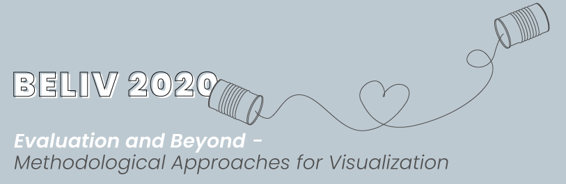
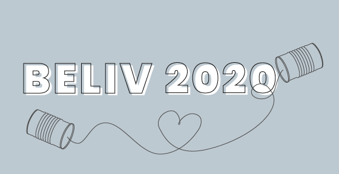

For eight months, the Financial Times has been producing daily visualisations on the coronavirus pandemic, attempting to distill the most important information into charts for a mass audience spread across the globe. In the process of creating and disseminating more than 1,000 graphics on a topic of huge public interest, we have learned many lessons about the challenges of creating data visualisations that can be easily understood and trusted by an audience that spans a huge range in terms of its data- and visual-literacy, and its pre-existing feelings about a subject matter that has become intensely politicised. This talk will detail several of the challenges we have come up against in this process, and how we have attempted to solve them both within the domain of data visualisation and more broadly through best practices in clear communication. more ...
BREAK 9:30 - 10:00
BREAK 11:30-12:00
BREAK 1:30-2:00